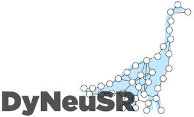
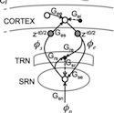
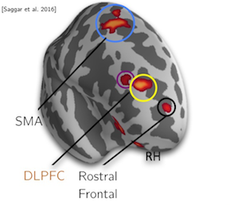

Toggle navigation
brain dynamics lab
blog
papers
projects
team

Generating dynamical neuroimaging spatiotemporal representations (DyNeuSR) using topological data analysis
2018-
Characterizing spatio-temporal dynamics in brain activity
2015-2020

Biophysical network modeling of brain dynamics
2017-2022

Role of brain dynamics in creativity and its enhancement
2012-2019